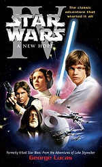

Star Wars: Episodio V - El Imperio contraataca (título original en inglés: Star Wars: Episode V - The Empire Strikes Back; también conocida en español como La guerra de las galaxias: Episodio V - El Imperio contraataca) es una película del género space opera dirigida por Irvin Kershner y estrenada por primera vez en Estados Unidos el 21 de mayo de 1980. El guion, basado en una historia de George Lucas, fue escrito por Lawrence Kasdan y Leigh Brackett. Aunque en términos cronológicos internos sea la quinta película de la saga Star Wars, en realidad fue la segunda película de la saga en ser estrenada.
Tras una difícil producción, Star Wars: Episode V - The Empire Strikes Back fue estrenada el 21 de mayo de 1980 y fue un éxito de crítica, siendo muy a menudo calificada como la mejor película de la saga. La película recaudó más de 538 millones de dólares en todo el mundo, convirtiéndola en la película más taquillera de 1980, y si se ajusta por la inflación la duodécima película más taquillera de la historia de los Estados Unidos.
La película fue remasterizada y reeditada con cambios y alteraciones en imagen y sonido en 1997, 2004 y 2011. En 2008 la revista Empire la ubicó en el tercer puesto de su lista de las 500 mejores películas de todos los tiempos.
Hace mucho tiempo en una galaxia muy, muy lejana [...] Es una época oscura para la Rebelión. Aunque la Estrella de la Muerte ha sido destruida, las tropas imperiales han obligado a las fuerzas rebeldes a dejar sus bases secretas y las han perseguido a través de la galaxia. [...] En una fuga de la temida Flota Imperial, un grupo de guerreros rebeldes liderado por Luke Skywalker ha establecido una nueva base secreta en la remota tierra congelada de Hoth. [...] Darth Vader, Señor del mal, obsesionado con encontrar al joven Skywalker, ha despachado al lejano espacio miles de sondas a control remoto...
La alianza rebelde, perseguida por el Imperio, ha establecido una nueva base secreta en el remoto planeta helado de Hoth. Darth Vader, obsesionado por encontrar a Luke Skywalker, ha enviado miles de sondas espaciales por toda la galaxia. Una de ellas llega hasta Hoth y es vista por Luke, quien cree que se trata de un meteorito, y se dirige a inspeccionar el lugar en el que ha caído cuando es atacado por un wampa. Mientras tanto, Han Solo, extrañado por la tardanza de su amigo, decide ir a buscarlo. Luke logra escapar de ser devorado por el wampa haciendo uso de la Fuerza para alcanzar su sable de luz y cercenar un brazo a la criatura, pero en su huida cae agotado en el inmenso desierto de hielo y tiene una visión de Obi-Wan Kenobi, quien le indica que debe ir al planeta Dagobah para entrenarse con el maestro Yoda. Han encuentra a Luke y construye un refugio para pasar la noche. Al día siguiente son encontrados por su compañeros y, de retorno a la base rebelde, Luke se recupera de sus heridas en un tanque de bacta. Los rebeldes localizan un androide espía imperial en las inmediaciones de la base y su destrucción alerta al Imperio. Darth Vader comienza a desplegar el ataque contra las tropas rebeldes, pero el general Veers saca las naves del hiperespacio demasiado cerca del plantea y alerta a las tropas rebeldes de su presencia.
Una vez en Hoth y con las tropas rebeldes alertadas, se produce la batalla. El Imperio ha sopesado un ataque aéreo pero finalmente se decanta por un ataque en tierra con los caminantes imperiales AT-AT aunque la rebelión se defiende con sus guarniciones de Snowspeeders y sus armas no consiguen derrotar al Imperio. Luke Skywalker que se encontraba en una de ellas y tuvo la idea de enlazar las piernas de los caminadores con los arpones de los Snowspeeders, pero finalmente es alcanzado por una descarga láser y cae, no obstante finalmente con un explosivo se introduce dentro de un caminante imperial y lo destruye.
La defensa finalmente fracasa aunque gracias al cañón de iones algunas naves imperiales han sido destruidas, facilitando la huida de los rebeldes, en ese momento la flota rebelde fija curso a Dantooine, menos Luke Skywalker que fija curso a Dagobah y el Halcón Milenario, cuyo propulsor de velocidad luz queda dañado por el ataque imperial.
El Halcón Milenario ocupado por la princesa Leia Organa, el contrabandista Han Solo, el wookie Chewbacca y el droide C-3PO escapando de las naves imperiales, se interna en un campo de asteroides. Allí, logran evadir al Imperio adentrándose en el cráter de un asteroide particularmente grande.
Mientras, a bordo del Ejecutor el Emperador Palpatine contacta con Darth Vader con el propósito de destruir al hijo de Skywalker citándolo como "un gran enemigo" ya que es una seria amenaza para el imperio Galàctico, pero Vader conocedor de su procedencia decide convencer al Emperador de que sería mejor tener al hijo de Skywalker de su lado convirtiéndolo al lado oscuro, "¿puede hacerse? pregunta el emperador. "Se unirá a nosotros o morirá, mi señor" le responde Vader.
Mientras en el cráter del asteroide un ataque de Mynocks altera a los pasajeros del Halcón Milenario, Han Solo dispara una descarga con su blaster y el asteroide empieza a moverse, finalmente se da cuenta de que no están en una cueva, sino que el túnel resulta ser el interior de un gusano espacial. Esto obliga al Halcón a salir del asteroide y enfrentarse a la flota imperial.
En una gran maniobra de Han Solo, logran esconderse justo detrás de la torre de vigilancia de un destructor estelar. El capitán de la misma se disculpa personalmente con Darth Vader por haber perdido a los rebeldes, Vader acepta la disculpa luego de asesinarlo.
La tripulación decide partir hacia Bespin, pasando desapercibidos al radar del destructor estelar entre sus desperdicios, pero Boba Fett, avispado cazarecompensas logra percatarse y decide seguirles. Una vez en Bespin, se reúnen con Lando Calrissian, viejo amigo de Han, para reparar el propulsor, allí son recibidos con grandes lujos.
Mientras tanto, Luke, acompañado por R2-D2, arriba a Dagobah mediante un aterrizaje de emergencia. Establece un campamento, pero es sorprendido por una pequeña y molesta criatura verde que le promete guiarlo hasta la casa de Yoda. Luke le sigue y descubre que, para su sorpresa, él era Yoda. Yoda es reacio a entrenar a Luke en las artes de "La Fuerza", pero Obi-Wan intercede apelando que el también era un joven con la cabeza distraída cuando fue entrenado, a lo que Yoda no puede negarse y comienza a instruir a Luke en el conocimiento de la Fuerza.
Yoda le da a Luke grandes lecciones de sabiduría, como que el tamaño no importa (cabe destacar que Yoda mide 0,66 metros), el origen de la Fuerza y la diferencia entre el lado oscuro y el luminoso. Durante el entrenamiento, Yoda le enseña a su joven aprendiz cómo hacer levitar, a través de la Fuerza, la nave atascada en el pantano por el aterrizaje. Durante una meditación, Luke logra ver el futuro: Leia y Han sufriendo en una ciudad en las nubes. Habiendo visto eso, Luke decide ir a rescatarlos, ignorando las advertencias de Yoda y de Obi-Wan (quien vuelve al mundo en forma de espíritu). Durante este periodo de entrenamiento, Yoda insta a Luke a entrar en la cueva de las sombras, donde no necesitará armas y donde se encontrará con el reverso tenebroso de la fuerza. Una vez allí Luke se encuentra con la visión de Darth Vader y ambos se enfrentan, derrotando Luke a Vader cortandole la cabeza. Cuando la cabeza de Darth Vader cae al suelo el casco se rompe, mostrando el rostro de Luke.
En Bespin, Han y Leia llegan a Ciudad Nube y son bien recibidos por Lando, quien ganó la estación en una apuesta, pero pronto descubren que este ha hecho un trato para mantener al Imperio alejado a cambio de que entregue a Leia, Han y Chewbacca a Vader, quien espera que Luke acuda al rescate de sus amigos cuando conozca su paradero. Además, Vader decide congelar a Han en carbonita para enviarlo a Jabba el Hutt, con quien el cazarrecompesas tenía una deuda. Lando, al ver lo ocurrido, se arrepiente de su decisión y ayuda a Leia, Chewbacca y C-3PO a escapar en el Halcón Milenario, aunque desconoce que su hipervelocidad ha sido desactivada.
Luke llega a Ciudad Nube y se enfrenta a Vader en un duelo de sables láser que finaliza con la derrota del primero después de que el segundo le ampute la mano derecha. Vader revela a Luke que no mató a su padre, ya que es él, y le ofrece que ambos se unan para gobernar la galaxia. El joven se niega y salta al vacío, pero consigue agarrarse a una antera en los bajos de Ciudad Nube y se comunica con Leia mediante la Fuerza. El Halcón Milenario acude en su rescate y, al salir de la atmósfera de Bespin, R2-D2 reactiva la hipervelocidad de la nave y consiguen escapar de las tropas imperiales. Poco después, Luke recibe una prótesis robótica de su mano en la nave médica de la Alianza Rebelde y Lando y Chewbacca parten en busca de Han a bordo del Halcón Milenario.

|

|

|

|

|
|

|

|

|

|